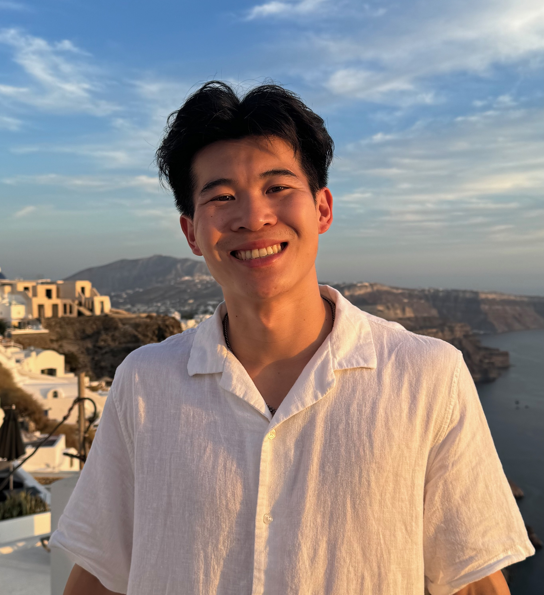

Welcome! I am a sixth year mathematics Ph.D. student at the University of California San Diego, advised by professor Aaron Pollack. Before that, I completed my undergraduate studies at UCLA. As of Fall 2025, I am on the postdoctoral job market.
Here is my CV.
Email address: brhu [at] ucsd [dot] edu
Office: HSS 5085
Current Teaching: Math 10C Sections B01 - B04
Office Hours: Tuesday 9am-11am (HSS 5012), Thursday 11am-1pm (HSS 5085)